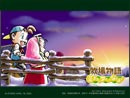
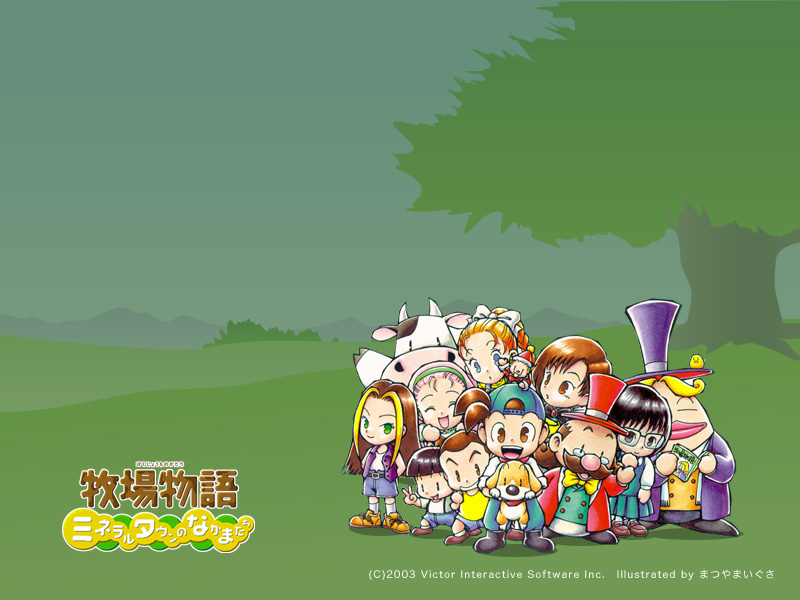
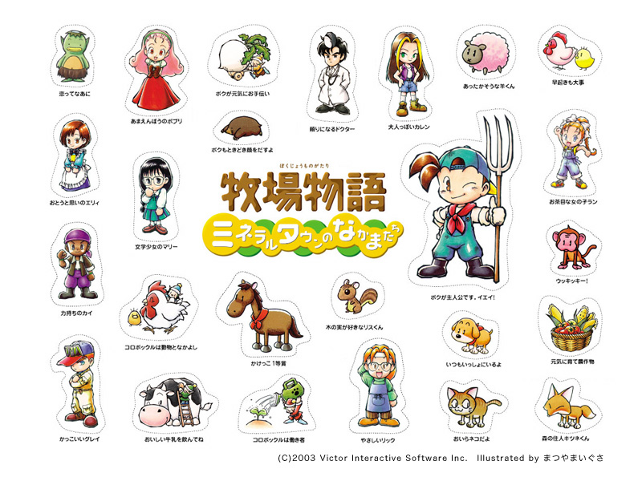
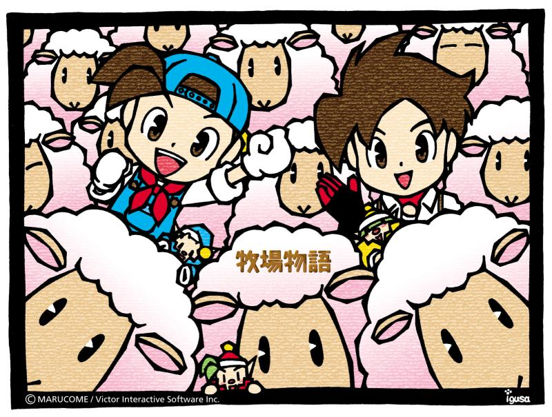
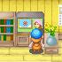
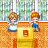
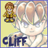

O commercial da T.V Japonesa de Mineral Town dura 15 segundos e tem pequenos trechos da jogabilidade. Você pode ver o mini-game de Frisbee,
Trabalhando com os Duendes da Colheita, dormindo na praia e a cerimonia de casamento. No fim do comercial vocês podem ver o pacote de bônus de adesivos que vem com o jogo.
Download: HMFoMT Comercial
Se você gostaria de assistir na versão do Windows Media Player, você pode baixar do VIS do website do Bokumono (talvez obsoleto). O webmaster do VIS também criou pequenos extras bonitinhos para colocar em seus computadores. Você pode baixar a screem saver e colocar como papel de parede que vem com o personagem de Friends of Mineral Town.
|  Screen Saver Windows OS Screen Saver MAC OS |
 |  |  |
Aqui vai algums avatares para Forums (65x65) você pode usar quando você posta no seu forum de mensagens favorito. Essas imagens são protegidos de um link remoto então se você quiser usá-los, baixe a imagem e hospede em seu proprio servidor.

Se você sempre quis fazer um layout da terra de sua fazenda antes de começar a plantar, existem agora um configurador de fazendalandia pra você! Funkymushroom criou um pequeno programa que você pode usar para desenhar como você gostaria do layout do seu campo de plantação. Para usar este script, baixe o seguinte arquivo .zip e extraia os conteudos para a pasta dos seu HDD. Dê um duploclique no arquivo main.htm. Você pode então desenhar um campo de plantação virtual!
Além do Configurador da Fazendalandia, Funkymushroom também criou um script que irá calcular os lucros das estações de suas plantações. Apenas conte ao script o lucro planejado quão quantas de cada planta você quer que cresça, quando você planta a primeira rodada o script mostrará quanto dinheiro você fará naquela estação! Use este arquivo, descompacte do .zip baixado dentro da pasta, e depois abra o arquivo "planner.htm".

{kind=link}
{kind=link}
{kind=link}
{kind=link}
{kind=link}
{kind=link}